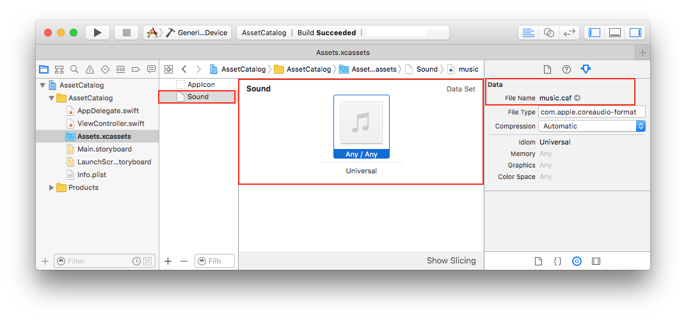
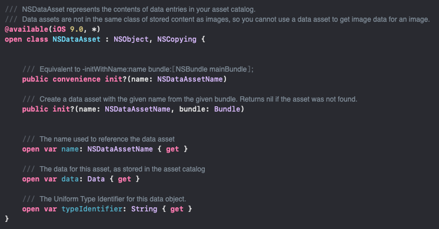

Asset catalog에서 audio file 관리하기
Asset catalog에서 audio file을 추가해서 사용하는 방법을 정리한다.
Table of Contents
일반적으로 asset catalog에는 App Icon, Color, Image 등을 추가해서 UIImage(named:), UIColor(named:) 등의 형태로 사용할 수 있었다.
1 | let image = UIImage(named: "image") |
Asset catalog에는 image, color 외에 media(audio, video) 등의 파일을 추가하여 Data 타입으로 사용할 수 있다. Asset catalog에서 data asset을 생성하고 media file을 끌어다 놓으면 된다.

이렇게 추가한 media는 NSDataAsset으로 가져올 수 있다. NSDataAsset은 asset catalog에 있는 data entries의 content를 나타내는 객체로, data property를 통해 실제 content를 Data 타입으로 가져온다.

다음과 같이 사용할 수 있다.
1 | let player: AVAudioPlayer? |